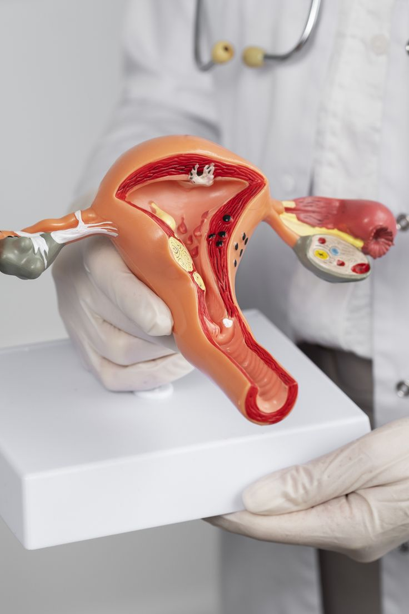

Serviços
Cada mulher vive uma história única e o cuidado também deve ser. Meus serviços foram pensados para acolher todas as fases da vida feminina, com atenção, sensibilidade e propósito.

Acompanhamento Ginecológico
O acompanhamento ginecológico regular é essencial para a saúde da mulher. Consultas preventivas ajudam a identificar precocemente alterações e promovem bem-estar em todas as fases da vida.
Saiba mais →Acompanhamento Obstétrico
O acompanhamento obstétrico garante uma gestação mais tranquila e saudável. Cuidar da mãe e do bebê com atenção e presença faz toda a diferença em cada etapa.
Saiba mais →Sexualidade
A sexualidade é parte fundamental da saúde e do equilíbrio emocional. Um olhar acolhedor e sem tabus ajuda a viver a sexualidade com mais consciência, prazer e confiança.
Saiba mais →Laser Íntimo
O laser íntimo é um tratamento seguro e eficaz para melhorar a saúde e o conforto da região genital. Pode auxiliar na lubrificação, na firmeza e na autoestima feminina.
Saiba mais →Contracepção
Existem diversas opções de contracepção, e cada mulher tem uma necessidade única. O acompanhamento médico é essencial para escolher o método mais seguro e adequado ao seu estilo de vida.
Saiba mais →Clareamento Íntimo
O clareamento íntimo é um procedimento estético que visa uniformizar o tom da pele da região genital. Realizado com segurança, pode contribuir para o conforto e a autoestima feminina.
Saiba mais →Vamos cuidar da sua saúde juntas?
Atendimento humanizado em Belo Horizonte. Agende pelo WhatsApp.